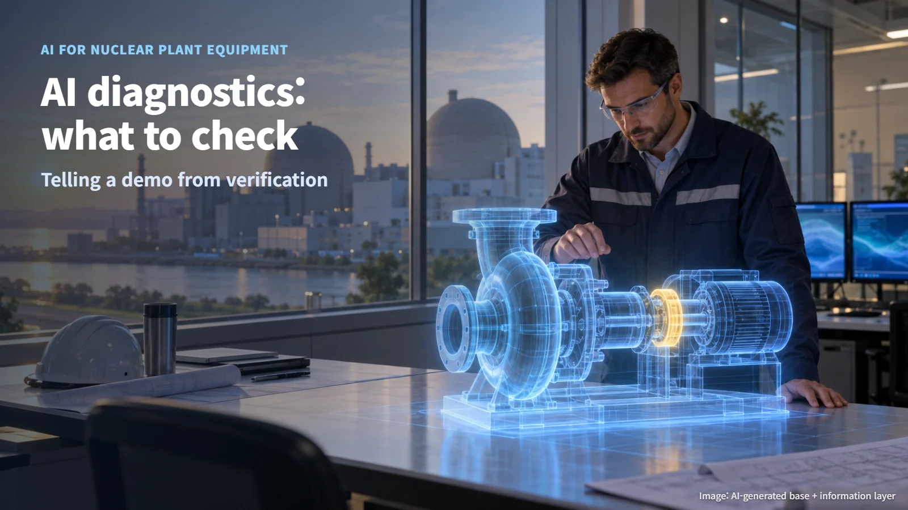
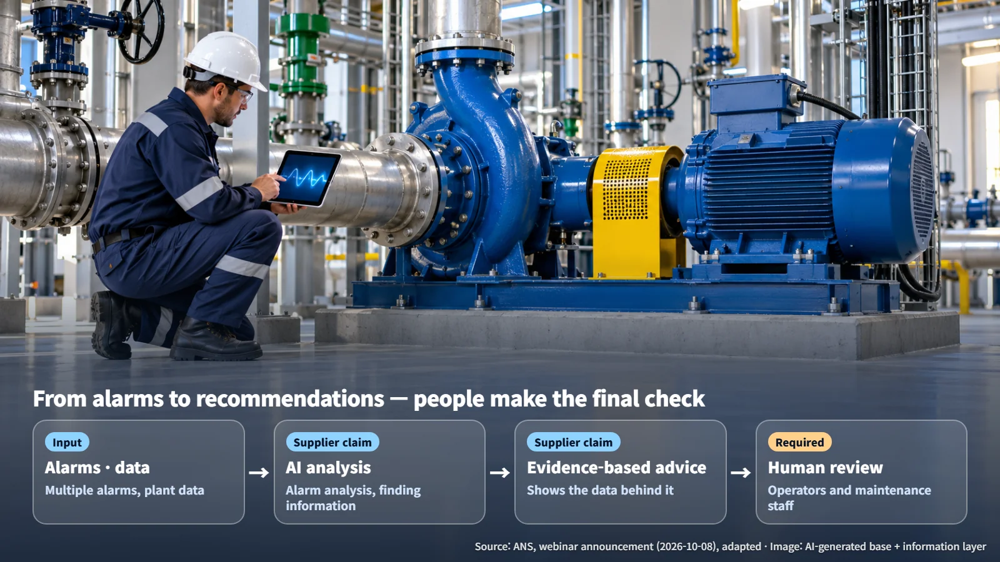
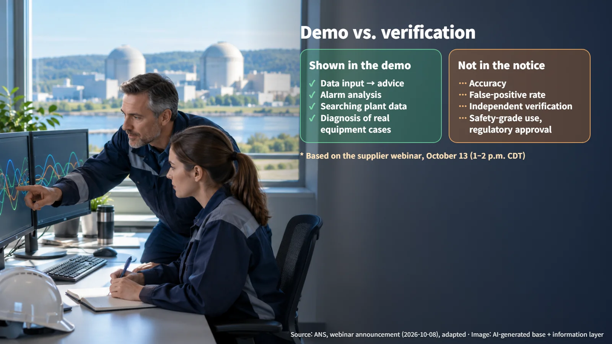

United States · Plant AI
AI Diagnostics for Nuclear Plant Equipment: What Should We Check Before Trusting It?
An ANS webinar with Nuclearn will demonstrate AI equipment diagnostics on October 13; here are the questions that show whether such a tool can be trusted.
"An AI that diagnoses equipment problems at a nuclear plant sounds great, but can we really trust it?" It is a fair question. Good news about new tools naturally raises a second one: what happens when the AI gets it wrong?
On October 8, 2026, the American Nuclear Society (ANS) announced that it will host an equipment diagnostics webinar on October 13 together with Nuclearn, a company that builds AI for the nuclear industry. The event has yet to take place, so instead of discussing results, this article looks at how to read a demonstration like this one and which questions help separate a promising tool from a proven one.

Why Nuclear Plants Have So Many Alarms
A nuclear plant runs a huge number of components, such as pumps, valves and motors. When a value like temperature, pressure or vibration moves outside its set range, an alarm sounds. An alarm works much like a note saying, "Please take a closer look at this piece of equipment." It flags that something has changed and invites a person to find out why. Alarms are designed to be sensitive, so that small changes are caught early, while the problem is still easy to fix.
The challenge comes when several alarms appear at once. Staff then have to work out which alarm points to the real cause and which ones are simply its knock-on effects. The webinar announcement lists easing the workload created by multiple alarms as one of its topics. Picture an engineer in front of an alarm screen, moving back and forth between maintenance records and operating data to narrow down the cause. Every minute spent sorting alarms is a minute taken away from other work, which is why tools that help with this sorting attract attention.
What an Equipment Diagnostics AI Aims to Do
According to the announcement, the session runs from 1:00 to 2:00 p.m. Central Daylight Time (CDT) on October 13. Lorenzo Slay, Nuclearn's Vice President of Product, will introduce the company's Equipment AI product and walk through the process from data input to evidence-based recommendations.
The presentation covers four topics: analyzing equipment alarms, easing the workload from multiple alarms, finding information in plant data, and a diagnostic demonstration on real equipment conditions.
Put simply, the tool gathers scattered alarms and plant data, produces a recommendation such as "this component may have this problem," and shows which data that recommendation was based on. "Evidence-based" means the tool leaves a trail that a person can follow and check, rather than delivering a bare conclusion. A good comparison is a doctor who explains a diagnosis by pointing to specific test results: the patient, or a second doctor, can then look at the same results and reach their own view. In a plant, that trail lets an engineer check whether the data behind a recommendation is current, complete and relevant.

A Demonstration Shows the Process; Verification Proves Performance
One distinction matters here. This event is a supplier presenting its own product. The announcement includes no figures for accuracy, for the false-positive rate (how often the system flags a problem where none exists), or for independent verification results.
A demonstration is a lot like a test drive at a car dealership. You learn how the car handles, while its official safety rating comes from separate certified testing. In the same way, shorter diagnosis times and better field efficiency are claims the supplier will describe during the demonstration; third-party confirmation of that performance would come from separate evaluation.

The announcement describes how an operations-support tool for equipment diagnosis is applied. Use in safety-grade systems that directly control the reactor, and approval by a regulator, are outside the scope of this event. Equipment that directly controls a reactor's safety functions is held to much stricter design and qualification requirements than tools that support day-to-day operations and maintenance, so it helps to place each new tool in the right category from the start.
Four Questions to Ask Before Adopting It
When judging an equipment diagnostics AI, four questions are worth asking.
1. Is the input data reliable? If instrument readings or maintenance histories are inaccurate, the recommendations will be shaky too. An AI can only be as good as the information it receives. 2. Can the basis of each recommendation be traced? Staff can verify a conclusion only if they can follow it back to the original data. A recommendation that shows its sources can be checked; one that shows only an answer has to be taken on faith. 3. Is there a human review step? Recommendations should be reviewed by operators and maintenance staff before any action, with final responsibility resting with people. 4. Has field performance been evaluated? It is important to know how often the tool is right or wrong on real plant data, and how errors are handled when they occur. Both missed problems and false alarms carry a cost, so a clear record of each is part of any sound evaluation.
If you watch the October 13 demonstration or a public recording, pay attention to how it handles failure cases and false positives, and how it presents its evidence. Whether to trust an AI diagnosis is best judged by how clearly it answers these four questions, more than by how impressive the demonstration looks.
Trust in a tool is earned through verification, and a demonstration is the starting point for asking the right questions. Keeping that one distinction in mind makes news about AI in nuclear plants much easier to read calmly.